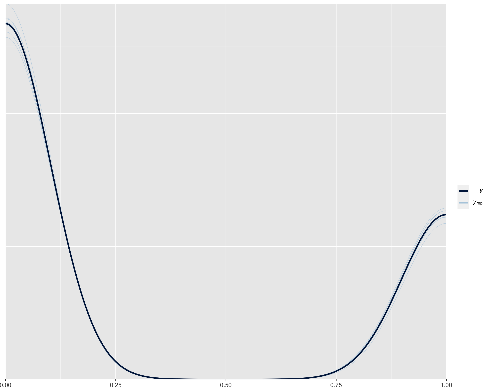
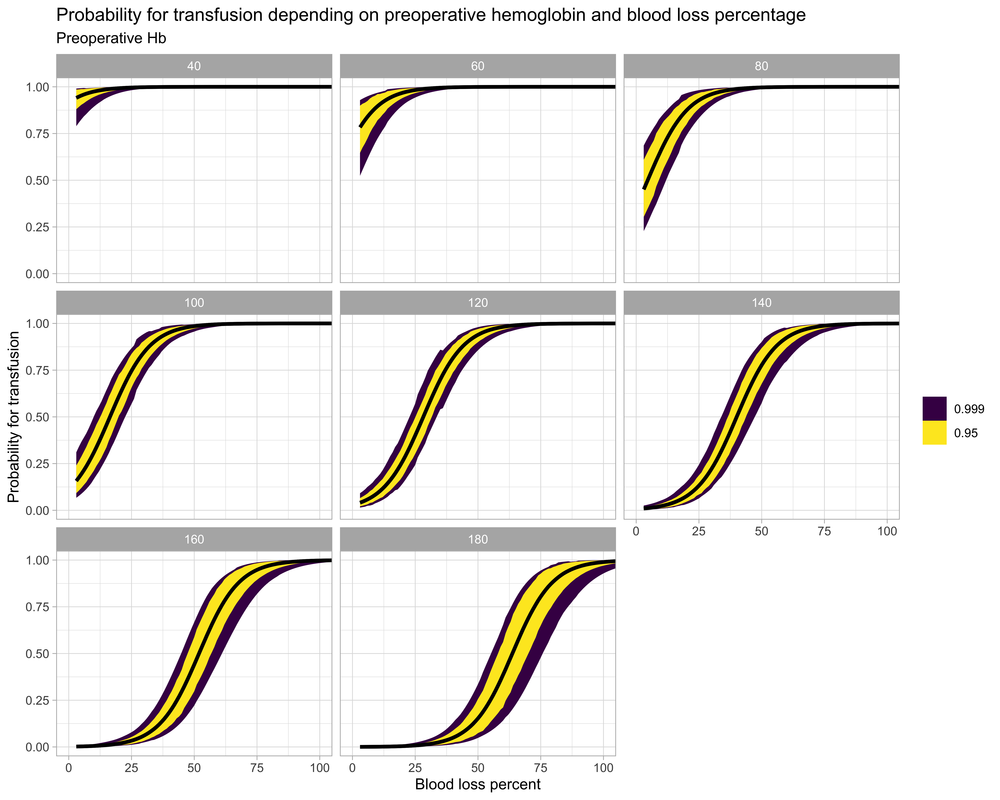
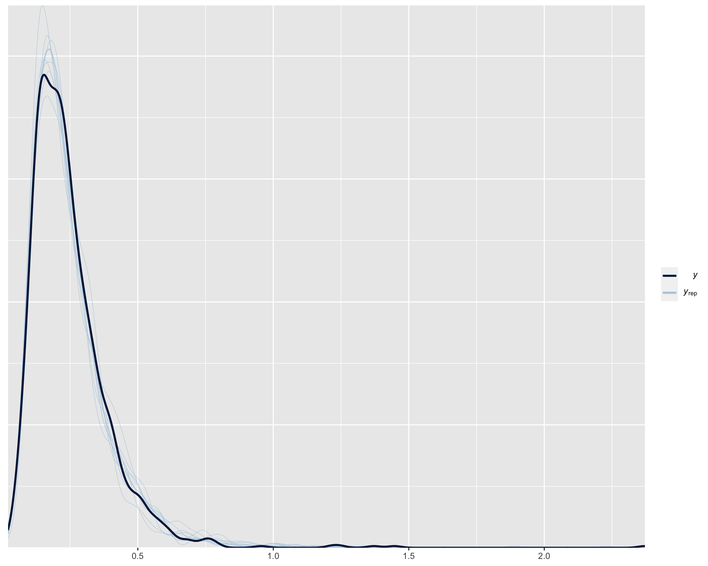
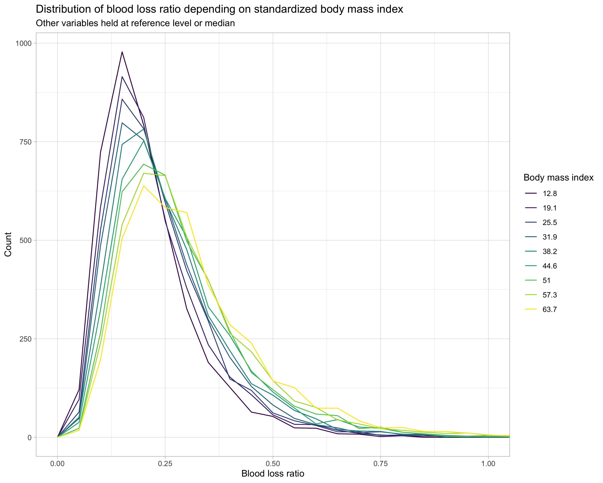

3 Results
3.1 Data plots


3.2 Model outputs
3.2.1 Model 1
Model with intraoperative transfusion as response, blood loss percentage and preoperative hemoglobin as population-level effects and operation year as group-level effect.
3.2.1.1 Coefficients table
| Intraoperative transfusion | ||
|---|---|---|
| Predictors | Odds Ratios | CI (100%) |
| Percent blood loss | 1.13 | 1.10 – 1.17 |
| Preoperative hemoglobin | 0.93 | 0.91 – 0.95 |
| Random Effects | ||
| σ2 | -0.00 | |
| τ00 | 0.22 | |
| ICC | -0.01 | |
| N op_year | 17 | |
| Observations | 1169 | |
| Marginal R2 / Conditional R2 | 0.406 / 0.432 | |
3.2.1.2 Posterior predictive check plot

3.2.1.3 Conditional probability plot

3.2.2 Model 2
Model with blood loss ratio as response, oral anticoagulation, thrombocyte aggregation inhibitors, age, body mass index, charleston comorbidity index, gender, tumor stadium and nodal stadium as population-level effects and operation year as group-level effect.
3.2.2.1 Coefficients table
| Blood loss ratio | ||
|---|---|---|
| Predictors | Estimates | CI (95%) |
| Intercept | -1.57 | -1.71 – -1.44 |
| Oral anticoagulation | 0.00 | -0.15 – 0.16 |
|
Thrombocyte aggregation inhibition |
0.03 | -0.07 – 0.13 |
| Age (standardized) | -0.08 | -0.16 – 0.00 |
|
Body mass index (standardized) |
0.10 | 0.03 – 0.17 |
| Female gender | 0.01 | -0.05 – 0.07 |
|
Charleston comorbidity index |
-0.00 | -0.03 – 0.02 |
| Tumor stadium | 0.03 | 0.00 – 0.05 |
| Nodal stadium | 0.01 | -0.03 – 0.07 |
| Random Effects | ||
| σ2 | 0.00 | |
| τ00 | 0.02 | |
| ICC | 0.17 | |
| N op_year | 17 | |
| Observations | 1168 | |
| Marginal R2 / Conditional R2 | 0.013 / 0.133 | |
| Parameter | p_MAP | Effects | Component |
|---|---|---|---|
| b_Intercept | 0.0000000 | fixed | conditional |
| b_oakTRUE | 0.9999557 | fixed | conditional |
| b_tcaggrTRUE | 0.7841257 | fixed | conditional |
| b_m_age | 0.2080947 | fixed | conditional |
| b_m_bmi | 0.0332456 | fixed | conditional |
| b_genderfemale | 0.9505910 | fixed | conditional |
| bsp_mocci | 0.9935171 | fixed | conditional |
| bsp_mop_tumor | 0.1479393 | fixed | conditional |
| bsp_mop_nodes | 0.9837982 | fixed | conditional |
3.2.2.2 Posterior predictive check plot

3.2.2.3 Conditional distribution plot
